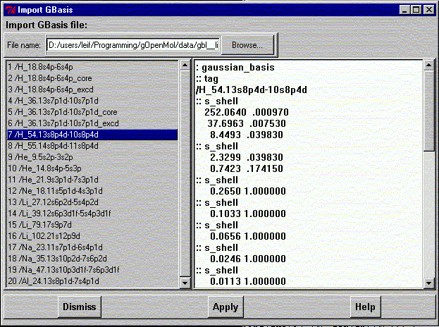
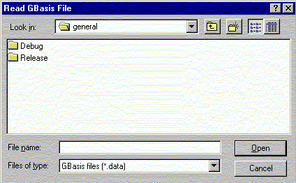

**************************************************************************
Import OpenMol Gaussian Basis Wiever/Editor widget
Leif Laaksonen CSC 1996
**************************************************************************
This is the OpenMol Gaussian Basis set widget browser/editor. As it is now implemented the file (database) can only be viewed not edited.
Use the file browser to select a data file. There is one sample file (gbl__line_input.data) in the gopenmol data directory.

File browser to select the basis set database.

Most likely this will only be useful for a OpenMol user.
Line command: see import command
**************************************************************************
LUL/1996
**************************************************************************